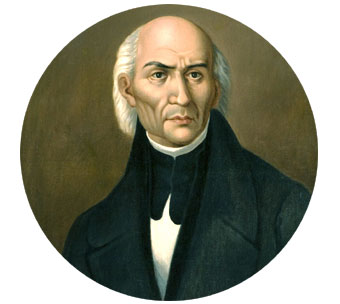

Miguel Hidalgo y Costilla
Conocido como el "Padre de la Patria", fue un sacerdote erudito e influyente que marcó el inicio de la gesta independentista con el histórico Grito de Dolores la madrugada del 16 de septiembre de 1810. Además de convocar al pueblo a levantarse en armas contra el régimen colonial, promulgó en Guadalajara el decreto para la abolición de la esclavitud en México. Aunque su liderazgo militar fue breve debido a su captura y ejecución en 1811, su valentía y visión de justicia social sentaron las bases ideológicas y el impulso inicial del movimiento insurgente.